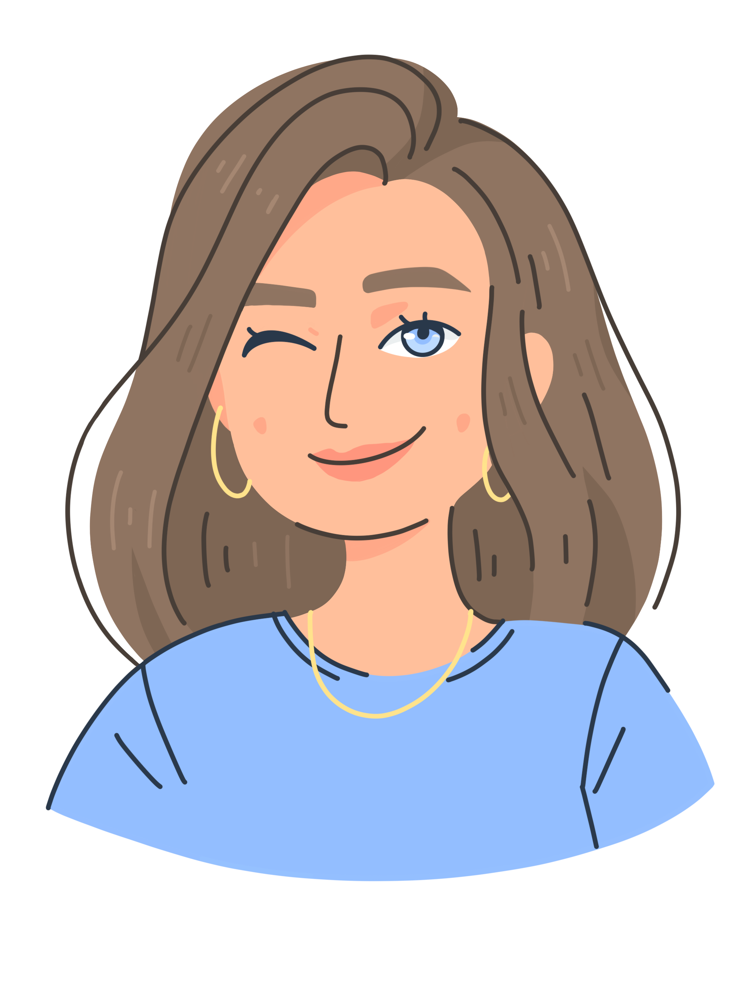

Please note that I'm currently only available for freelance illustration work, not UX & UI Design.
View some of my favourite client work and personal projects here.
Have a look at my instagram page if you want to see more of my illustration work, including some non-digital illustrations.
Marieke Hepkema
